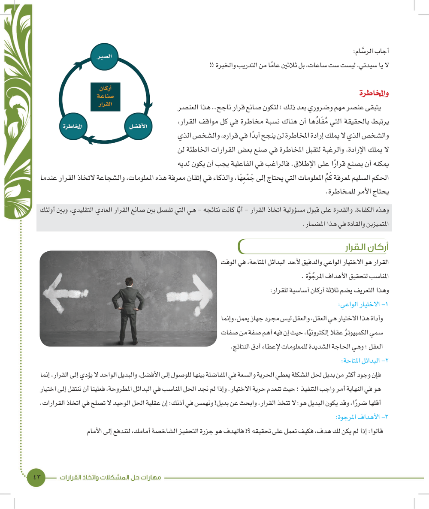
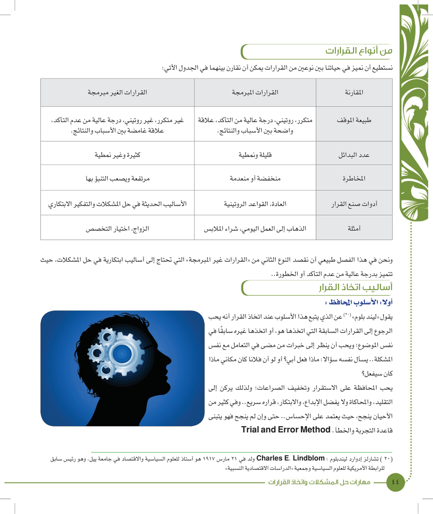
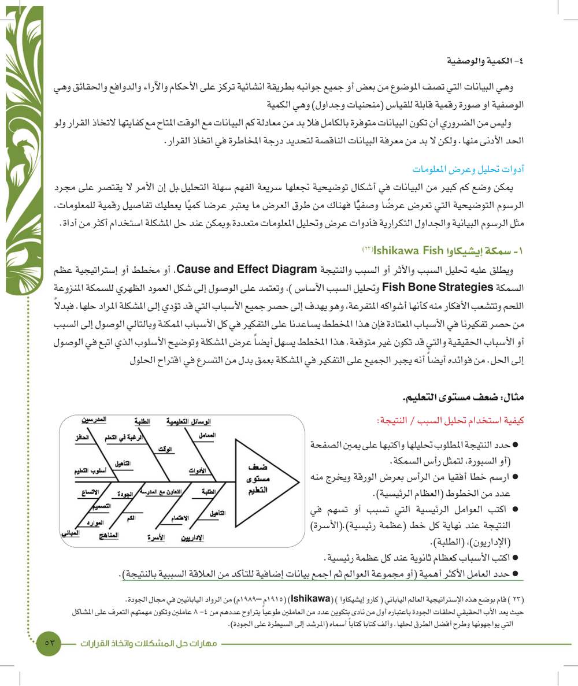
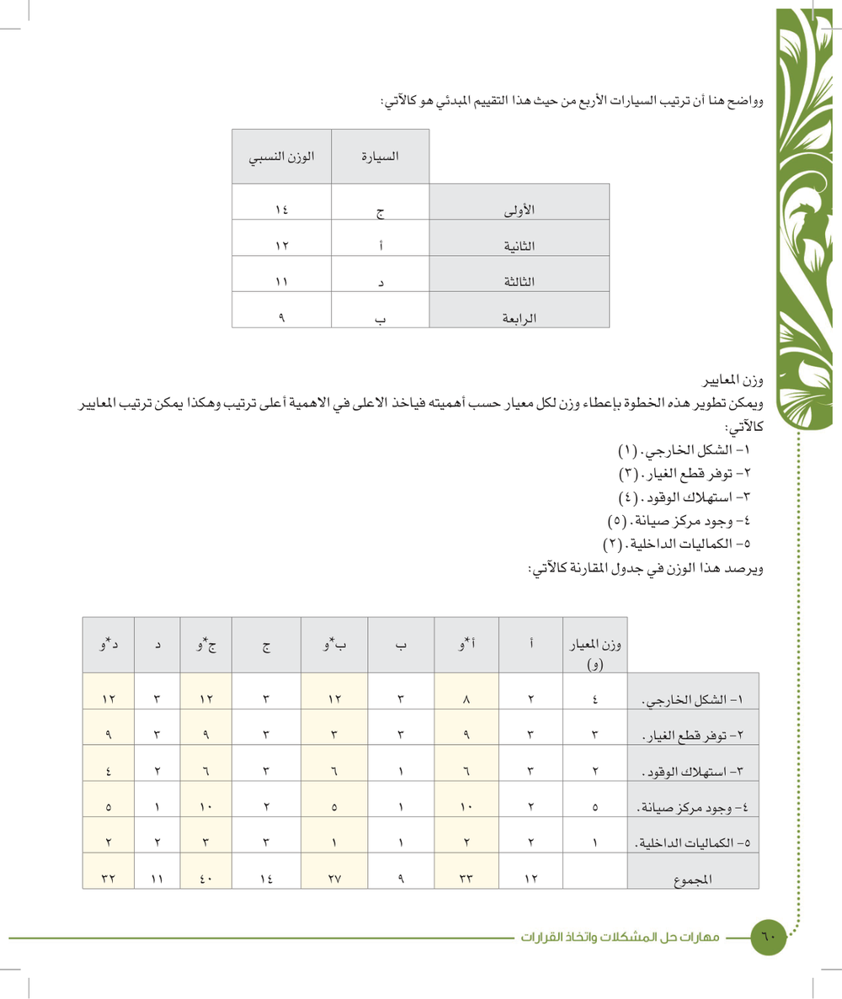

الوحدة الثالثة — مهارات حل المشكلات واتخاذ القرارات
النقاط الأساسية من الكتاب (صفحات 40–69). الملخص الكامل على الدرايف.
الفكرة العامة
هذي الوحدة تعلمك وش هو القرار وأركانه وأساليبه، وليش الاستعجال يخرب أي قرار. وبعدين تمشي معك على خريطة ٩ خطوات في ٣ مراحل: تحدد المشكلة، تتخذ القرار، وتصدره وتتابعه. ركز على التعريفات والقوائم والأرقام لأنها أكثر شي ينسأل عنه.
🎯 أهداف الوحدة
وش المطلوب منك
يعرف العلاقة بين المشكلة والقرار
يعرف مفهوم عملية حل المشكلات والأزمات واتخاذ القرارات
يعدد أنواع المشكلات والأزمات الدراسية والحياتية
يذكر خريطة حل المشكلات واتخاذ القرارات
يدرك أهمية اكتشاف وتحديد المشكلات
يحسن اكتشاف وتحديد المشكلات
يجيد جمع المعلومات حول المشكلات
يتمكن من استخدام طرق تحليل المعلومات في تحديد المشكلة واتخاذ القرار
يؤمن أن كل مشكلة لها أكثر من حل
يفهم معنى البدائل والمفاضلة بينها
يقدر على توليد الحلول والبدائل ووضع معايير المقارنة بينها
يتبنى اتخاذ القرارات على أساس الأهداف و القيم الإيجابية
يتيقن أنه ماخاب من استشار وما ندم من استخار
يؤدي صلاة الاستخارة عند كل قرار
يضع خطة تنفيذ القرار والخطة البديلة
يشرح العقبات والصعوبات التي يمكن مواجهتها في حل المشكلات واتخاذ القرارات
العلاقة بين المشكلة والقرار
صفحات 42، 43
أكبر غلط عند أي مشكلة: الاستعجال، والقرار المستعجل غالبًا ناقص ومحكوم عليه بالفشل
قصة «دعها تنضج»: القطف مو هدف بحد ذاته، الهدف تستفيد من الثمرة
اتخاذ القرار جوهر إدارة الذات، وعملية مستمرة طول حياتك، عشان كذا الإنسان «صانع القرارات Decision Maker»
أبسط أشكال القرار ٣: إيقاف عمل يجري، تشغيل جزء ساكن، تحويل نشاط من اتجاه لآخر
القرار مو صعب، الأصعب تتعلم تختار الأفضل، وأغلب القرارات في ظروف عدم التأكد
الجراح والطيار رواتبهم أعلى لأن قراراتهم حياة أو موت، والرسام: «ثلاثين عامًا من التدريب والخبرة»
نص الكتاب — احفظه إذا لم تركب سفينة الصبر، فإنك لن تستطيع أن تصل معنا إلى الشاطئ.
نص الكتاب — احفظه عملية اتخاذ القرارات، هي جوهر إدارة الذات

أركان صناعة القرار: الصبر، الأفضل، المخاطرة (رسم دائري) — صفحة 43 من الكتاب
أركان صناعة القرار وأركان القرار
صفحة 43
أركان صناعة القرار (الرسم الدائري) ٣: الصبر، الأفضل، المخاطرة
فيه نسبة مخاطرة في كل قرار، واللي ما عنده إرادة المخاطرة ما ينجح في قراره
اللي يبي الفاعلية يحتاج: حكم سليم لكم المعلومات، ذكاء في إتقانها، وشجاعة للمخاطرة
أركان القرار من تعريفه ٣: الاختيار الواعي، البدائل المتاحة، الأهداف المرجوة
أداة الاختيار الواعي العقل، والبديل الواحد = أمر واجب التنفيذ مو قرار
«عقلية الحل الوحيد لا تصلح في اتخاذ القرارات»، والهدف «جزرة التحفيز»
نص الكتاب — احفظه القرار هو الاختيار الواعي والدقيق لأحد البدائل المتاحة، في الوقت المناسب لتحقيق الأهداف المرجوَّة .
أنواع القرارات: المبرمجة وغير المبرمجة
صفحة 44
المبرمجة: متكررة، روتينية، تأكد عالي، بدائل قليلة ونمطية، مخاطرة منخفضة أو منعدمة
أداة المبرمجة: العادة والقواعد الروتينية، ومثالها الذهاب للعمل وشراء الملابس
غير المبرمجة: غير متكررة، عدم تأكد عالي، بدائل كثيرة وغير نمطية، مخاطرة مرتفعة
أداة غير المبرمجة: الأساليب الحديثة والتفكير الابتكاري، ومثالها الزواج واختيار التخصص
الوحدة تركز على غير المبرمجة لأنها تحتاج أساليب ابتكارية

جدول المقارنة بين القرارات المبرمجة وغير المبرمجة — صفحة 44 من الكتاب
أساليب اتخاذ القرار: المحافظ والعلمي والمُرضي
صفحات 44، 45، 46
٤ أساليب: المحافظ، العلمي، المُرضي، التوفيقي
المحافظ (ليندبلوم): يرجع لقرارات سابقة له أو لغيره، يسأل «ماذا فعل أبي؟»، يعتمد على التقليد والإحساس، ولو فشل التجربة والخطأ
ميزة المحافظ العظيمة: التراكمية، بس تفكيره رأسي في نفس المسار
العلمي = الرجل الاقتصادي = «النموذج الراشد» (سيد عليوة)، يدور الأمثل، والاعتراض: المثالية أكبر وسيلة للضياع
المُرضي = الرجل الإداري: What Satisfies is good enough، محقق للرضا وأكثر واقعية
على الأسلوب العقلاني ٧ اعتراضات، منها الحكم الشخصي وصعوبة حصر كل البدائل
نص الكتاب — احفظه وهو شكل آخر من الأسلوب العلمي، وهو الأسلوب الذي يقوم على سلوك الرجل الإداري (Administrative Man)، ويقصد بها البحث عن القرار الأنسب والمُرضي (What Satisfies is good enough)
النظرية التوفيقية وأنماط اتخاذ القرارات
صفحات 46، 47
إتزيوني: «النموذج المختلط أو النظرية التوفيقية» تجمع العقلانية والتراكمية
القرارات الأساسية: مهمة واستراتيجية، long range، بدون تفاصيل، على أساس عقلاني
القرارات الثانوية: أقل أهمية، short range، تركز على التفاصيل، على أساس تراكمي
مثال كاميرتين الطقس: وحدة للصورة الكلية ووحدة للقطاع الصغير بتفاصيله
عيبها: صعوبة تحديد هل القرار أساسي أو ثانوي ومين يحدد
المعلومة المتأخرة ما تفيد، والمبكرة جدًا خطيرة وممكن تضر
المعلومة الشرعية ٤ شروط: مقبولة عرفًا، ما تخالف القانون، ما تمس الدين، ترعى حقوق الآخرين
الدقة: موثقة، محددة، متوافقة مع المعلومات المؤكدة
أنواع المعلومات: التنبؤات والتوقعات (حدس وتخمين)، البيانات (أولية، ثانوية، تاريخية)، الكمية والوصفية
مو لازم البيانات كاملة، بس لازم تعرف الناقص عشان تحدد درجة المخاطرة
نص الكتاب — احفظه البيانات الأولية: تجمع خصيصًا للموضوع وتأخذ أحيانا شكل جمع البيانات العلمية من العينات المتعلقة بالموضوع باستخدام أدوات البحث المعتمدة مثل الاستبانة وغيرها
نص الكتاب — احفظه البيانات الثانوية: جمعت لأغراض أخرى وتصلح للموضوع أو تظهر خلال البحث عن البيانات الأولية ولا تتعلق بالموضوع مباشرة ولكن تصلح للاستفادة منها .
نص الكتاب — احفظه البيانات التاريخية: ما يتعلق بالموضوع لفترات سابقة أو خبرات سابقة أو أفراد سابقين

سمكة إيشيكاوا لمشكلة ضعف مستوى التعليم — صفحة 53 من الكتاب
مفاتيح إطلاق الأفكار ٩ أسئلة = Spurring Checklist / SCAMPER
إرشادات ٧: منها لا تحكم على أي فكرة قبل اكتمال الطرح، والمسجل أهم عضو، وعدم التغيير ممكن يكون أعظم بديل
نص الكتاب — احفظه البديل الصحيح هو الخطة التي إذا طبقت توصل إلى الهدف.
الخطوة الخامسة: تقييم البدائل
صفحات 58، 59، 60، 61
تقلل البدائل لـ ٦–٨ بخمس معايير تصفية (واقعي؟ الإمكانيات؟ جُرّب وفشل؟ مشكلة جديدة؟ دمج؟)
«لا يوجد بديل إلا وله عيوب ومزايا»
أنواع البدائل ٤: الجيد Good، الضعيف Poor، المختلط Mixed، غير المجدي Bland
التقييم يبي بعد نظر وتوقع ردود الأفعال، والمطلوب أقل انحراف بين التوقع والواقع
مثال السيارة: ٥ معايير و٤ سيارات، ج الأولى (١٤) وبعد وزن المعايير بعد الأولى (٤٠)
وزن المعايير يغير ترتيب البدائل، وأرقام الكتاب لـ أ وب متضاربة بين ص 60 و61
نص الكتاب — احفظه البديل غير المجدي (Bland): هو الذي لا يتوقع أن تكون له عيوب (سلبيات) أو مزايا (إيجابيات).
نص الكتاب — احفظه البديل المختلط (Mixed): هو الذي تكاد تتساوى عيوبه ومزاياه.

مثال شراء السيارة: جدول وزن المعايير ومجاميع البدائل — صفحة 60 من الكتاب
الخطوة السادسة: الاختيار واتخاذ القرار
صفحات 61، 62، 63
الاختيار «عملية طرح» توصلك لبديل واحد
إبراهيم عليه السلام: البدائل الأصنام والكواكب والقمر والشمس، والمعيار «الأفول»
فاعلية القرار = النوعية × مدى القبول: ٨×٢=١٦ أقل من ٦×٤=٢٤
الحل الوسط المقبول غالبًا أفعل من الحل الصحيح المرفوض
لا تفرح بالإجماع: التعارض أفضل وسيلة لقرار سليم (قصة ألفريد سلون)
احتكاك وجهات النظر له فايدتين: يحميك من سجن الانطباعات، ويكون بدائل مختلفة ويقيمها
نص الكتاب — احفظه فاعلية القرار= النوعية × مدى القبول
المرحلة الثالثة والخطوة السابعة: إصدار القرار وتنفيذه
صفحات 63، 64، 65، 66
صناعة القرار = العملية كلها، اتخاذ القرار = الخطوة ٦ (أو خطوات المرحلة الثانية)، إصدار القرار = المرحلة الثالثة
قصة جرة العسل: القرار بلا خطة تنفيذ مجرد حلم
الأفضل تبيع القرار للمنفذين أثناء صنعه بمشاركتهم، وأول قواعد التنفيذ مشاركة كل من يقدر يساهم
القرار المُصدَر فيه ٦ فقرات: النص، الإبلاغ، التخطيط للعمل، المسؤوليات، الجدول الزمني، الميزانية
التخطيط للعمل ٦ نقاط، آخرها خطط الطوارئ، وقصة الملك وخزان العسل عن ضياع المسؤوليات
فشل التنفيذ: ٩٠٪ نصف كاملة، ٩٪ بمقدار ٥٩٪، ١٪ بس ١٠٠٪، وكن الراحلة من الإبل المائة
أنجز ولا توجز: الولد الأصغر جاب التقرير الكامل
نص الكتاب — احفظه هو وضع القرار موضع التطبيق بإلزام شخص أو أشخاص معينين بأداء مهام محددة.. في وقت معين ولفترة زمنية محددة.. باستخدام إمكانات مادية محددة.
نص الكتاب — احفظه القرار الناجح هو الذي تكون خطة تنفيذه جزءًا منه
التنفيذ بلا متابعة وتقييم خلل في الإصدار، والنتايج الحلوة في البداية ممكن تكون مرحلة الحماسة
أسئلة المتابعة ٦: التوصيل، المشاركة، المواعيد، الميزانية، المشاكل، الأهداف المرحلية
الدائرة المغلقة: الوضع المرغوب ← خ١، الحاجة للبيانات ← خ٢، مشاكل جديدة ← خ٥
المرونة: القرار اجتهاد بشري يصيب ويخطئ، فلا تندم وارجع للدائرة تصحح المسار
شروط الرجوع ٣: تأكد من التنفيذ المتقن، الفشل من القرار مو التنفيذ، واعرف الإيجابيات والسلبيات
نص الكتاب — احفظه إن نتائج التقييم تجعل عملية صناعة القرار دائرة مغلقة.. فعند كل خطوة تنفيذية يتم التقييم بالرجوع إلى الخطوة التي توازيها في عملية صنع القرار .
📖 التعريفات
بنص الكتاب
القرار
القرار هو الاختيار الواعي والدقيق لأحد البدائل المتاحة، في الوقت المناسب لتحقيق الأهداف المرجوَّة .
القرارات المبرمجة
متكرر، روتيني، درجة عالية من التأكد، علاقة واضحة بين الأسباب والنتائج.
القرارات غير المبرمجة
غير متكرر، غير روتيني، درجة عالية من عدم التأكد، علاقة غامضة بين الأسباب والنتائج.
الأسلوب العلمي (النموذج الراشد)
النموذج الراشد.. وهو الأسلوب الذي يقوم على سلوك الرجل الاقتصادي (Economic Man) الذي يتحرى الدقة في الحصول على المعلومات، وتشخيص المشكلة، وحصر الحلول، وتقييم الاحتمالات ثم اختيار أكثرها عقلانية
القرار المُرضي
وهو شكل آخر من الأسلوب العلمي، وهو الأسلوب الذي يقوم على سلوك الرجل الإداري (Administrative Man)، ويقصد بها البحث عن القرار الأنسب والمُرضي (What Satisfies is good enough)
القرارات الأساسية
وهي القرارات المهمة والإستراتيجية، وذات الأثر البعيد (long range)، حيث يقوم متخذ القرار بدراسة البدائل الرئيسية في ضوء الأهداف التي يحددها، ولا ينشغل بتفاصيل دقيقة، وصغيرة، وتؤخذ هذه القرارات على أساس عقلاني.
القرارات الثانوية
وهي القرارات الأقل أهمية، وذات الأثر القصير ((short range))، حيث يقوم متخذ القرار بدراسة البدائل في ضوء القرارات الأساسية السابقة، وتركز هذه القرارات على التفاصيل، ويتم اتخاذها على أساس تراكمي
المشكلة
المشكلة هي عائق أو موقف يحول بين الفرد وتحقيق أهدافه
حل المشكلة
وحل المشكلة هو عملية تفكير مركب يستخدم فيه الفرد خبراته ومهاراته للوصول الى نتيجة
المشكلة الحقيقية
هي العقبة الرئيسية التي تعوق تحقيق الأهداف. ولا يتحقق الهدف إلا بحلها.
المشكلة الفرعية
هي عرض مؤقت ينتج من المشكلة الحقيقية ويختفي باختفائها .
التنبؤات والتوقعات
وهذا النوع يعتمد على الحدس والتخمين والتجارب السابقة والاستشارات السريعة لبعض الملامسين للموضوع
البيانات
وهي المعلومات الخام المتعلقة بالموضوع والتي تجمع من مصادر مختلفة
البيانات الأولية
تجمع خصيصًا للموضوع وتأخذ أحيانا شكل جمع البيانات العلمية من العينات المتعلقة بالموضوع باستخدام أدوات البحث المعتمدة مثل الاستبانة وغيرها
البيانات الثانوية
جمعت لأغراض أخرى وتصلح للموضوع أو تظهر خلال البحث عن البيانات الأولية ولا تتعلق بالموضوع مباشرة ولكن تصلح للاستفادة منها .
البيانات التاريخية
ما يتعلق بالموضوع لفترات سابقة أو خبرات سابقة أو أفراد سابقين
سمكة إيشيكاوا
ويطلق عليه تحليل السبب والأثر أو السبب والنتيجة Cause and Effect Diagram، أو مخطط أو إستراتيجية عظم السمكة Fish Bone Strategies
المدرج التكراري
المدرج التكراري شكل من أشكال خرائط الأعمدة ويوضح توزيع بعض الخصائص
خرائط باي (Pie Charts)
هي خرائط تستخدم في توضيح علاقة الجزء بالكل وكيف يسهم الجزء في الناتج الكلي.
خرائط الزمن (Time Charts)
هي خرائط تعرض التغيرات التي تطرأ على حدث معين خلال فترة معينة من الزمن.
خرائط التدفق (FlowCharts)
تظهر خرائط التدفق المدخلات والأنشطة ونقاط القرار والمخرجات من عملية معينة
خرائط بيرت (Pert Charts)
مصطلح ((بيرت)) هو تعبير مختصر عن ((أسلوب مراجعة وتقييم البرامج)) Program Evaluation and Review Technique
العناصر الحاكمة (Critical Factors)
وهي العوامل التي لو توفرت لأمكن حل المشكلة.
العصف الذهني
وتعتمد على أن يطرح الأفراد أفكارهم أثناء التفكير فيها وتسمى طريقة توليد الأفكار أو العصف الذهني Brain-Storming
البديل الصحيح
البديل الصحيح هو الخطة التي إذا طبقت توصل إلى الهدف.
البديل الجيد (Good)
وهو الذي مزاياه أكثر من عيوبه.
البديل الضعيف (Poor)
هو الذي عيوبه أكثر من مزاياه.
البديل المختلط (Mixed)
هو الذي تكاد تتساوى عيوبه ومزاياه.
البديل غير المجدي (Bland)
هو الذي لا يتوقع أن تكون له عيوب (سلبيات) أو مزايا (إيجابيات).
فاعلية القرار
فاعلية القرار= النوعية × مدى القبول
صناعة القرار
فصناعة القرار كما فهمناها هي العملية كلها من أولها إلى آخرها
التنفيذ
هو وضع القرار موضع التطبيق بإلزام شخص أو أشخاص معينين بأداء مهام محددة.. في وقت معين ولفترة زمنية محددة.. باستخدام إمكانات مادية محددة.
القرار الناجح
القرار الناجح هو الذي تكون خطة تنفيذه جزءًا منه
الدائرة المغلقة
إن نتائج التقييم تجعل عملية صناعة القرار دائرة مغلقة.. فعند كل خطوة تنفيذية يتم التقييم بالرجوع إلى الخطوة التي توازيها في عملية صنع القرار .
خطط الطوارئ (الخطط البديلة)
وهي الخطط التي ستتعامل مع المشاكل أو الانحرافات التي قد يحدثها تطبيق القرار
فخاخ الاختبار
يخلط أركان القرار مع أركان صناعة القرار — الرسم الدائري في ص 43 اسمه أركان صناعة القرار وفيه الصبر والأفضل والمخاطرة، أما تعريف القرار فيطلع منه ثلاثة أركان ثانية.
يخلط الرجل الاقتصادي بالرجل الإداري — الاقتصادي هو الأسلوب العلمي ويدور المثالية والأمثل، والإداري هو القرار المُرضي ويدور الأنسب اللي يكفي.
ينسب الأساليب للأشخاص الغلط — كل أسلوب له صاحب في الكتاب، والأسئلة تجي كثير على النسبة.
يعكس القرارات الأساسية والثانوية عند إتزيوني — الأساسية مهمة وبعيدة الأثر وعقلانية بدون تفاصيل، والثانوية أقل أهمية وقصيرة الأثر وتراكمية وتركز على التفاصيل.
يعكس صفات القرارات المبرمجة وغير المبرمجة — المبرمجة روتينية ومتكررة ومخاطرتها منخفضة، وغير المبرمجة غير متكررة وعدم التأكد فيها عالي ومخاطرتها مرتفعة.
يلخبط ترتيب الخطوات التسع ومراحلها — كل مرحلة فيها ثلاث خطوات بترتيب ثابت، والأسئلة تجي على رقم الخطوة أو مرحلتها.
يعتبر اتخاذ القرار وصناعته وإصداره نفس الشي — الكتاب يفرق: صناعة القرار هي العملية كلها، اتخاذ القرار هو خطوة الاختيار (أو خطوات المرحلة الثانية)، وإصدار القرار هو المرحلة الثالثة.
يحسب العرض أو المشكلة الفرعية هي المشكلة الحقيقية — المشكلة الفرعية عرض مؤقت ينتج من الحقيقية ويختفي باختفائها، والانشغال بالأعراض يبقيك في المشكلة بلا حل.
يخلط البيانات الأولية والثانوية والتاريخية والتنبؤات — كل نوع له مصدر مختلف: الأولية تنجمع للموضوع نفسه، الثانوية جمعت لغرض ثاني، التاريخية من الماضي، والتنبؤات حدس وتخمين.
يخلط أدوات تحليل وعرض المعلومات ببعض — كل أداة لها وظيفة: باي للجزء والكل، المدرج لتوزيع خاصية بالأعمدة، الزمن لتغير حدث عبر الوقت، التدفق للمدخلات ونقاط القرار، بيرت للوقت والتكلفة، وإيشيكاوا للسبب والنتيجة.
يظن الجودة لحالها تحدد فاعلية القرار أو يجمع بدل ما يضرب — الكتاب يقول فاعلية القرار = النوعية × مدى القبول، فالقرار الأقل جودة ممكن يكون أفعل لو قبوله أعلى.
يظن نقيّم الأفكار أول بأول في العصف الذهني — العصف الذهني قايم على طرح الأفكار عفوية، والإرشادات تمنع الحكم على أي فكرة قبل اكتمال الطرح، لأن الفكرة الغريبة ممكن تكون نواة لفكرة جيدة.
🎯 جاهز؟
28 سؤال على هذي الوحدة، و32 سؤال منها من الاختبار التجريبي حق الدكتور. الجواب يطلع لك على طول، وتقدّمك ينحفظ.